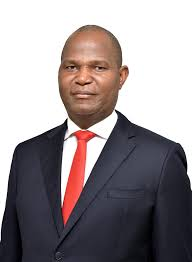
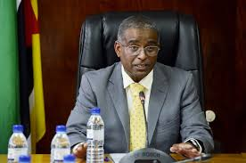
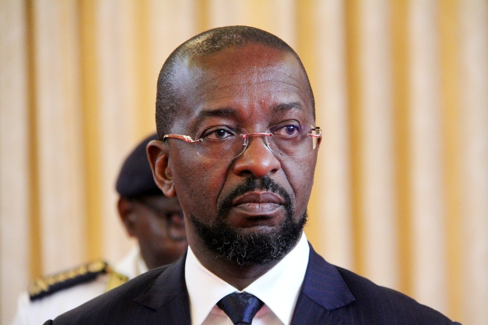
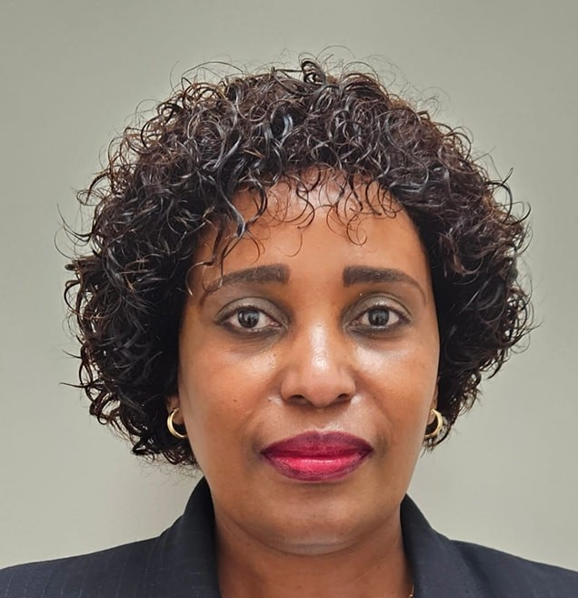
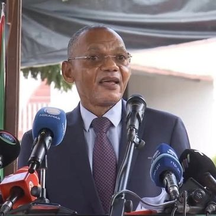
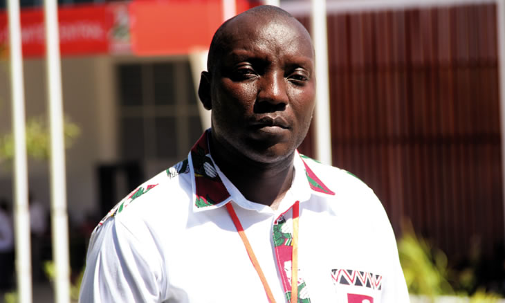
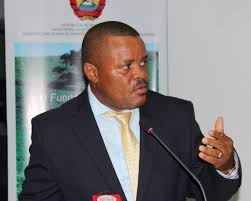
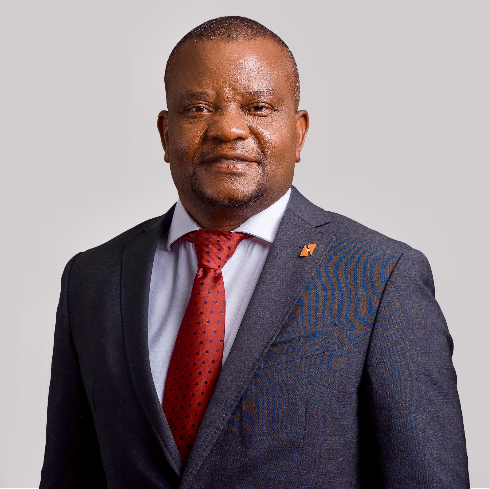
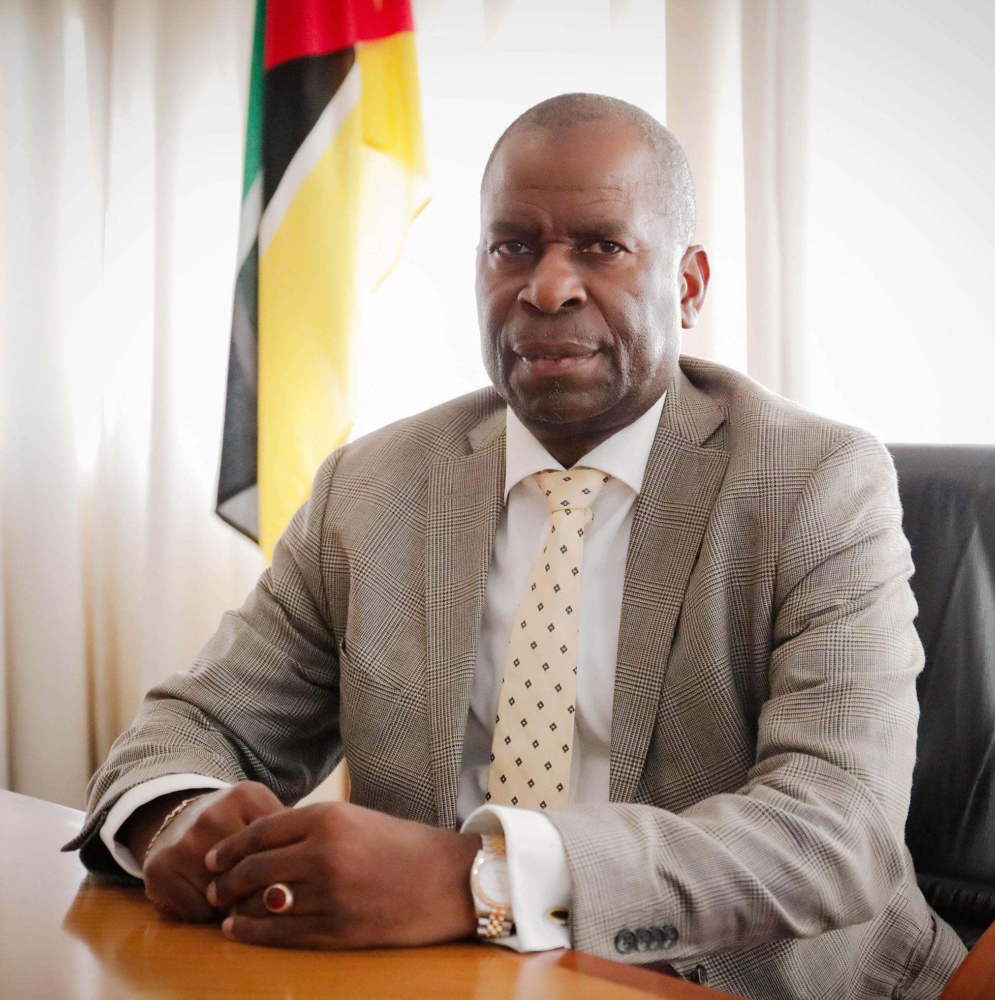
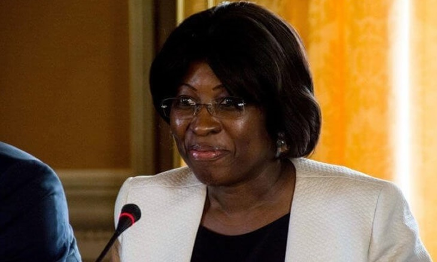

Lista de Ministros
-

Presidente do Conselho de Ministros
Nome: Daniel Francisco Chapo
Idade: 48 anos
-
Primeira Ministra
Nome: Maria Benvinda Delfina Levi
Idade: 55 anos
-

Ministro da Saude
Nome: Ussene Hilario Isse
Idade: 54 anos
-
Ministra das Financas
Nome: Carla Alexandre Oreste do Rosario Fernandes Louveira
Idade: 43 anos
-

Ministro da Defesa
Nome: Cristovao Artur Chume
Idade: 53 anos
-
Ministro da Economia
Nome: Basilio Zefanias Muhate
Idade: 45 anos
-

Ministra da Educacao e Cultura
Nome: Samaria Dos Anjos Filemon Tovela
Idade: ? anos
-

Ministro do Interior
Nome: Paulo Chachine
Idade: 66 anos
-
Ministra do Trabalho, Genero e Accao Social
Nome: Ivete Angela Dos Anjos Ferrao Alane
Idade: 48 anos
-

Ministro da Juventude e Desportos
Nome: Caifadine Paulo Manasse
Idade: ? anos
-
Ministro das Comunicacoes e Transformacao Digital
Nome: Americo Muchanga
Idade: 56 anos
-
Ministro dos Transportes e Logistica
Nome: Joao Jorge Matlombe
Idade: 46 anos
-
Ministro da Planificacao e Desenvolvimento
Nome: Salim Ismael Vala
Idade: 55 anos
-

Ministro da Agricultura, Ambiente e Pescas
Nome: Roberto Mito Albino
Idade: 58 anos
-
Ministra dos Combatentes
Nome: Nyelete Brooke Mondlane
Idade: 63 anos
-

Ministro da Presidencia para os Assuntos da Casa Civil
Nome: Ricardo Xavier Sengo
Idade: 56 anos
-
Ministro das Obras Publicas, Habitacao e Recursos Hidricos
Nome: Fernando Rafael
Idade:
-
Ministro da Administracao Estatal e Funcao Publica
Nome: Inocencio Florentino Jose Impissa
Idade: 43 anos
-

Ministro dos Recursos Minerais e Energia
Nome: Estevao Tomas Rafael Pale
Idade: 65 anos
-

Ministra dos Negocios Estrangeiros E Cooperacao
Nome: Maria Manuela dos Santos Lucas
Idade: 64 anos
-
Ministro da Justica, Assuntos Constitucionais e Religiosos
Nome: Mateus da Cecilia Finiasse Saize
Idade: 55 anos